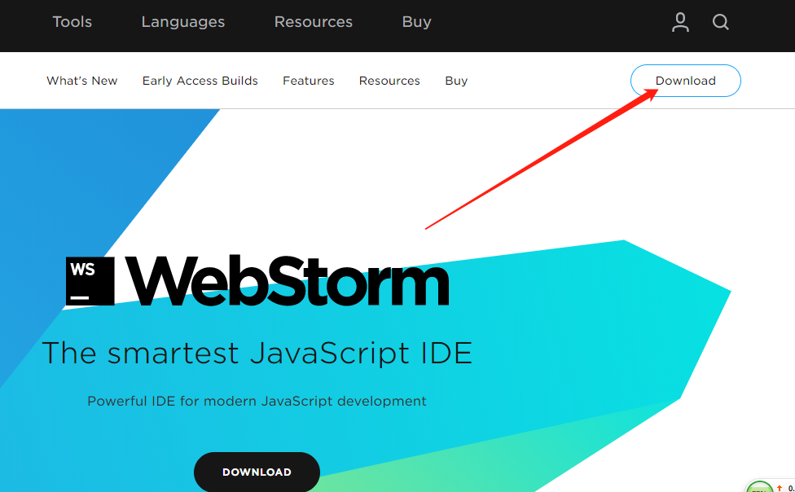
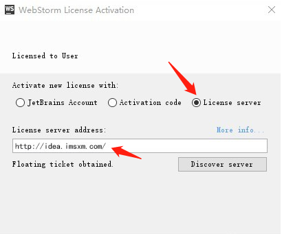
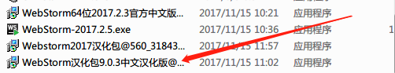

sublime text3 的插件下载及汉化
1.从官网下载sublime text3,官网:sublime
2.下载插件
如果安装成功，就可以在Preferences菜单下看到Package Settings和Package Control两个菜单。
在Sublime Text 3中按下快捷键Ctrl+Shift+P 在出现的文本框中输入Install Package(或直接输入“ip”)选中packageControl：Install Package并回车 ，然后在输入框中输入你要下载的插件，然后按回车就可以安装插件了。
3.汉化sublime text3（只需下载插件即可）
A.输入快捷键Ctrl+Shift+P 在出现的文本框中输入Install Package(或直接输入“ip”)选中packageControl：Install Package并回车 ，然后在输入框中输入“localization”就会发现汉化语言的相关插件，最后点击主页面菜单的help中选择语言再选择中文即可。
Atom
Atom官网：Atom
Webstorm
webstorm官网：webstorm
官网下载如下图：点击 “DOWNLOAD” 即可下载软件。

注册破解：运行webstorm, 这里我们选择“license server”然后输入：http://idea.imsxm.com/，这样我们就激活：

汉化
先百度搜索下载WebStorm汉化包

将汉化包 放到安装路径下的lib文件夹里，拷贝进去后重新打开webstorm就可以了。